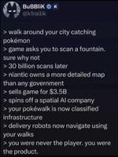

0


After 13 years of observations and data processing, astronomers have released the largest two-dimensional map of the universe ever assembled, "offering a sweeping new view of nearly 4 billion celestial objects across roughly three-quarters of the sky," reports Space.com. From the report: The new map, created by the Dark Energy Spectroscopic Instrument (DESI) Legacy Imaging Surveys team, contains a staggering 5.6 trillion pixels and combines more than 263,000 telescope exposures collected over more than a decade. The observations span visible and near-infrared wavelengths, providing an enormous portrait of stars, galaxies and other cosmic phenomena across the sky, according to a statement from the National Science Foundation (NSF) NOIRLab. "It's part of the fabric of astronomy research now," David Schlegel, co-lead of the Legacy Surveys and a scientist at the U.S. Department of Energy's Lawrence Berkeley National Laboratory, said in a statement. "When you're working with astronomical objects today, you often start by pulling up the Legacy Imaging Viewer to see what you're looking at."
Read more of this story at Slashdot.
An anonymous reader quotes a report from The New York Times: Two days before tens of thousands of migrants surged into Ceuta, one of Spain's enclaves on Morocco's northern coast, a newspaper there posted a video on TikTok and Instagram showing two young women walking in the city in wet suits, their hair still damp. The posts didn't say so explicitly, but the implication was clear: The women had just swum across the border from Morocco. "Ceuta can't take it anymore," the newspaper, El Faro de Ceuta, declared in the posts. On the other side of the border, the video resonated very differently. Cropped and reposted in Arabic, the video seemed like an invitation. The women were smiling, flashing peace signs and thumbs up and, most of all, walking around freely. The video seemed to legitimize rumors that had percolated for weeks on social media suggesting that a recent ruling by Spain's Supreme Court meant migrants who arrived illegally by sea could stay in the country. As one account on Facebook put it, falsely, "Ceuta is turning into an open gate," when in fact migrants still faced expulsion after a judicial review. The responses to the posts about the swimmers were a critical part of a cascade of disinformation that experts described as one of the starkest instances in which social media contributed directly to a real-world tragedy.
Read more of this story at Slashdot.
Fei-Fei Li, aka The Godmother of AI, says the biggest AI risk in education may be students losing the motivation and agency to learn, rather than simply using the technology to cheat. She argues against banning AI outright, saying it can be valuable when used to support engaged students instead of replacing the thinking and struggle that learning requires. Techspot reports: Speaking on an episode of the science podcast Huberman Lab this week, Li talked about the fears around how students are using AI. "The absolute bad outcome is that our young generation, their agency and human-level motivation of learning and living is taken away by tools," the ImageNet inventor warned. "It should not be taken away by humans nor should it be taken away by machines." If we see a generation of graduates who have completely relied on AI without actively trying to learn anything for themselves, they risk leaving education without having "properly developed the brain," Li said.
[...] Li certainly isn't advocating for a complete ban on students using AI. She believes it can genuinely help struggling students who are already engaged in their learning. Li herself noted how she struggled with organic chemistry as a premed student, when teaching assistants and professors didn't have enough time to answer every question. While there's no obvious solution, Li says we need to find a way to keep children and students' motivation and agency. "Let's find a way to give them the access and the right way of using these tools," she said. Li added that if AI is used properly in education, it could make the students of the future "way smarter than us because they are superpowered."
Read more of this story at Slashdot.
A German digital-rights group has filed a criminal complaint against Meta, Ray-Ban parent EssilorLuxottica, and several retailers over Meta's AI smart glasses, arguing the devices can enable covert recording in violation of German privacy law. Prosecutors have begun a preliminary review, while Germany's network regulator says smart glasses are legal "as long as the recording function is clearly visible." Reuters reports: "There's no place to escape from smart glasses. You have to expect at any moment to be filmed and then exposed on the internet," said HateAid managing director Josephine Ballon. The organization reported the management of Meta, units of spectacles maker EssilorLuxottica including Ray-Ban, as well as retailers Fielmann, Apollo-Optik, Mister Spex and MediaMarkt to the Frankfurt-based digital crime prosecution unit ZIT. HateAid said its complaint was based on a federal digital data protection law that prohibits the sale of communication devices designed to film people without them noticing.
ZIT confirmed it received a complaint from HateAid invoking that law, saying it would routinely investigate on a preliminary basis whether there are grounds for a deeper probe. MediaMarktSaturn Retail Group said it was taking the complaint very seriously, adding that its suppliers had contractual obligations for all goods to be compliant with the law. Mister Spex said it had not been officially notified of a complaint and that it was taking protection of privacy very seriously.
Read more of this story at Slashdot.
At its Made by Google 2026 event today, Google unveiled a slew of new devices, headlined by the Pixel 11, Pixel 11 Pro, and Pixel 11 Pro Fold. Here's a breakdown of the company's latest smartphones, provided by TechCrunch: Pixel 11: The standard Pixel 11 gets a redesigned camera bar that is thinner than the one on the previous generation. Google says the new camera bar is more than 40% thinner and now uses an all-glass surface that stretches across the width of the phone. Google is also increasing the base storage to 256GB, doubling the previous starting capacity. The starting price for the new model is set at $899, reflecting a $100 increase compared to the Pixel 10. This price hike comes with the decision to drop the 128GB storage option. Plus, the ongoing RAM supply shortage plays a part in this increase.
Pixel 11 Pro and Pro XL: Google is making durability a bigger part of the Pro lineup. The company says the Pixel 11 Pro and Pixel 11 Pro XL have improved drop resistance and a new anti-scratch display coating that provides more than twice the scratch resistance of the Pixel 10 Pro models. The Pixel 11 Pro starts at $1,099, compared to $999 for the Pixel 10 Pro.
Pixel 11 Pro Fold: Google says the new foldable is nearly 10% lighter and almost 1mm thinner than the Pixel 10 Pro Fold. It also has slimmer bezels, a 48-megapixel main camera, and 30x Super Zoom. The company is also building on the IP68 water and dust resistance introduced with the Pixel 10 Pro Fold. The Pixel 11 Pro Fold uses a glass-fiber composite back cover designed to better withstand cracking, while a redesigned hinge offers additional protection for the inner display. Google says the changes make the model three times more durable than its predecessor. There were also several new Gemini-powered features unveiled at the event. Google is expanding "Live Transcribe" to support American Sign Language, using the Pixel Camera to translate signing into text in real time. A new voice-input feature called "Rambler" is designed to understand natural, unstructured speech, including filler words and run-on sentences. Google is also integrating "Circle to Search" more directly into the Pixel Camera for identifying objects, translating text, and asking questions about what users see.
Read more of this story at Slashdot.
The FAA says its push to recruit video gamers as air traffic controllers has helped it hire more than 2,000 trainees, reaching 94% of its hiring goal. Another 2,000-plus candidates are in the pipeline. CBS News reports: U.S. Secretary of Transportation Sean Duffy said in a recent social media post that the federal agency's recruitment campaign to recruit gamers as air traffic controllers has been a "game changer" for the Federal Aviation Administration. [...] When Duffy announced the initiative in April, he acknowledged that the Transportation Department needed to extend its reach to recruit prospective air traffic controllers.
"A lot of what they do playing games ... is what they do ... controlling traffic in the air," Duffy told CBS News senior transportation correspondent Kris Van Cleave in an interview on Tuesday at New Jersey's Newark Liberty International Airport. Duffy added that many current trainees started out as gamers. Only about 25% of controllers hold a traditional college degree, while former controllers note that gaming requires many of the same skills that air traffic controllers use on the job, such as thinking quickly, staying focused and managing multiple sources of information as they guide more than 80,000 flights to their destinations daily.
Read more of this story at Slashdot.
sciencehabit shares a report from Science Magazine: For more than half a century, physicists have searched for one of the strangest particles predicted by modern theory. It would be made almost entirely of gluons, the elusive subatomic particles that carry the strong nuclear force. Now, using a particle collider in Beijing, researchers say they have effectively proved the existence of such a "glueball."
In a preprint posted last month on arXiv and in a presentation last week at the International Conference on High Energy Physics (ICHEP), the researchers argue that a particle called X(2370), which they produced by smashing electrons into positrons at high energies, has the properties expected of a glueball. "It's an experimental triumph," says Colin Morningstar, a particle physicist at Carnegie Mellon University who was not involved in the finding. "It's the strongest evidence yet that particles dominated by a glueball component can exist in nature."
Read more of this story at Slashdot.
The Trump administration today unveiled a new program that will allow vetted U.S. companies to conduct cyber surveillance and offensive cyber operations against foreign transnational criminal organizations. A presidential memorandum signed August 12 directs the National Coordination Center to establish and manage the program, expanding the government's fight against cybercrime by tapping the technical capabilities of the private sector. It builds on a March executive order that called for greater private-sector involvement, but goes significantly further by establishing a formal operational framework for the initiative.
The White House argues that American companies possess a "critical offensive cyber advantage" whose capabilities have "historically been underutilized" in efforts to identify and disrupt criminal networks operating online. There are two broad categories of authorized activity. "Cyber Surveillance Operations" can involve secretly accessing foreign information systems without authorization to gather intelligence, including information that could later be used for offensive operations. "Cyber Effects Operations," meanwhile, can result in the "manipulation, disruption, denial, degradation, or destruction" of information systems, networks, or infrastructure.
It's worth noting that companies will not be free to launch their own operations. The memorandum requires program officials to "review every cyber operations package and provide written approval and direction" before a participating company can act. Operations that could cause death or serious injury, or "rise to the level of use of force or armed attack under international law," are classified as "Critical Outcomes" and cannot be approved through the standard process. The program includes safeguards requiring companies to halt and report operations that unintentionally affect U.S. persons or systems, as well as any imminent threats to critical infrastructure.
Read more of this story at Slashdot.
Wired reports that consumer neurotechnology is rapidly moving from the lab into workplaces and homes, with companies including Apple, Meta, and Snap developing products that can monitor or interpret brain activity. Researchers warn that as these systems improve, neural data could become the next major privacy battleground. Some neuroscientists are already calling for a series of core rights, coined "neurorights," that protect "mental privacy," "identity," and personal "agency." Here's an excerpt from the article: Over the past two decades, researchers using functional magnetic resonance imaging (fMRI), which tracks the iron in the hemoglobin supplying oxygen to neurons, have been building up increasingly detailed maps and inventories of the mammalian cortex. Thanks to huge advances in machine-learning artificial intelligence -- computer algorithms that are able to sort through enormous amounts of information and use statistical methods to make classifications and predictions -- fMRI scans can now be used to identify everything from depressive thoughts to the nuanced feelings of envy and schadenfreude. Other algorithms have been able to accurately piece together reconstructions of movie clips watched by subjects, just by analyzing their brain scans; or have detected, in probing the brain activity of swing voters in the US presidential election, responding to photographs and videos of presidential candidates, which candidates provoked anxiety or even disgust, and which elicited positive responses or feelings of empathy.
In just the last few years, neuroscience researchers have progressed from decoding images and emotions as they play across the cortex to sounds, words, phrases, and even language. In 2023, in a remarkable demonstration of this emerging technology, a woman called Ann Johnson, who had been paralyzed for 18 years by a brain-stem stroke, was able to speak again through the insertion of a grid of 253 electrodes onto the surface of her brain, which translated her neuronal signals into sentences, in real time, at a rate of 78 words per minute (just about half the speed of standard conversation). The research team at the University of California, led by neurosurgeon Edward Chang, had combined this brain-computer interface with an animated avatar of Johnson's head, which spoke in her own voice, as reconstructed from a recording of a 15-minute toast she had given at her wedding. Just as the avatar's mouth spoke Johnson's words as she thought them, so its expressions were similarly influenced by the nuances of her brain activity, which turned her thoughts about facial gestures into displays of emotion -- from smiles to pursed lips and frowns.
[...] The more invasive the recording equipment, the richer and more detailed the data. Surgical interventions are at the vanguard of neuroscience and remain very rare -- fewer than 100 people on the planet have brain-computer interfaces like Johnson's embedded beneath their skulls. Yet almost inevitably, a concerted trickle-down effect is occurring. In the summer of 2023, a team at the University of Texas demonstrated that they could use fMRI to translate brain scans into words and sentences, after subjects listened to 16 hours of the storytelling podcasts The Moth Radio Hour and The New York Times' Modern Love to train an AI model. When the subjects then listened to new podcasts, the algorithm was able to convert the gist of what they heard, as it manifested in their brains, into words, phrases, and sentences that roughly captured the stories. As the team's lead computational neuroscientist, Alexander Huth, put it in an interview with Science, "Our thought when we actually had this working was, 'Oh my God, this is kind of terrifying.'" Now noninvasive, wearable brain scanners are beginning to proliferate beyond the lab, making their way into our workplaces and, through the vast global consumer market, into our homes too.
Read more of this story at Slashdot.
The CFTC has ordered Kalshi to keep operating in New York, claiming the state's lawsuit against the prediction market created a "market emergency." They said it acted "to ensure market stability" and "ordered the exchange to continue to operate in accordance with the Commodity Exchange Act's Core Principles." Ars Technica reports: The market emergency alleged by the CFTC is that New York Attorney General Letitia James sued Kalshi on July 31. James' lawsuit seeks a court order to permanently enjoin Kalshi "from operating an unlawful gambling business" in the state. The lawsuit also demands that Kalshi "make full restitution to customers who have engaged in betting" and pay financial penalties.
"New York intends to make event contract derivatives waste away under its iron curtain of state gaming laws before the courts get the chance to issue final rulings," CFTC Chairman Michael Selig said yesterday. "Congress did not intend for derivatives exchanges to be regulated under a patchwork of state gaming laws... New York has no business regulating these interstate financial markets. The commission is required by law to ensure order in these markets, and that is what we have done today." [...]
The CFTC says it alone has the power to regulate platforms such as Kalshi and Polymarket under the Commodity Exchange Act, a US law that gives the CFTC exclusive jurisdiction over designated contract markets (DCMs). "These are financial exchanges that offer financial instruments and operate across state lines," Selig said yesterday. "They match the bid from a resident of one state with the offer of a resident from another state and submit the trade to a clearinghouse that backstops the transactions of customers throughout the country."
Read more of this story at Slashdot.
Researchers at Israeli cybersecurity firm Dream say suspected China-linked hackers used an open-source AI-agent system to conduct what may be the first observed end-to-end autonomous cyberattack against a government. According to the Financial Times (paywalled), the attack compromised at least 85 accounts and resulted in the theft of more than 2,500 personnel records from Taiwanese systems. Tom's Hardware reports: The campaign reportedly ran for four days at the beginning of July and at times deployed as many as eight autonomous agents in parallel. Dream said the system mapped 21 government systems before compromising user accounts and extracting personnel information. The attackers subsequently expanded their activity to Taiwan's nuclear safety agency, at least seven energy companies, government suppliers, and other government systems.
Dream says it found the evidence inside a 160-megabyte (160MB) online archive that surfaced during its broader tracking of cyberthreat actors. The archive reportedly held 1,395 files showing that the tool was built on two open-source AI agent systems -- Hermes and OpenClaw -- both of which can be downloaded freely and are designed to let large language models carry out multi-step tasks on their own.
Researchers could not determine which underlying model powered the agents, but the data reportedly showed the model's safeguards had been sidestepped by presenting the intrusion as an authorized penetration test rather than a real attack. Of particular concern is that the toolkit for the hack comprised such easily available systems, neither of which was purpose-built for offense. The operators appear to have assembled a capable autonomous tool out of components any developer can pull down and run.
What the researchers describe as the tool's most striking feature was its ability to continuously devise attacks on its own, rather than follow a preprogrammed route. The platform continuously assessed available evidence, ranked possible attack paths, and reprioritized them as circumstances changed. When one technique failed, the tool tasked another agent with searching the internet for information and developing an alternative approach.
Read more of this story at Slashdot.
An anonymous reader quotes a report from Ars Technica: On Monday, passengers aboard Delta flight 591 going from Las Vegas to Atlanta allegedly spoofed the onboard Wi-Fi, raising the attention of federal law enforcement. The incident came one day after the DEF CON security conference concluded in Las Vegas, and was first described on social media accounts that follow publicly available air-to-ground messages, known as ACARS.
According to the "ACARS Drama" account, a message was sent by pilots from the plane stated: "NO INFO AS OF NOW WE HAVE A BUNCH OF PAX THAT WERE AT A CYBER CONFERENCE IN LAS THEY WERE ABLE TO JAM OUR WIFI AND BROADCAST THEIR SIGNAL." A description of the incident posted to Reddit further stated that these passengers created a fake hotspot ("Delta WiFi Fast"), with a phishing landing page "designed to harvest passengers' personal credentials."
This technique, sometimes known as an "evil twin" attack, has been long-known to the IT security community. It involves setting up a fake Wi-Fi network and then capturing login credentials and other data. "One initial finding is an unauthorized WiFi network, which was not provided, operated, or supplied by Delta, was present onboard the aircraft for a short time during the flight," said a Delta spokesperson. Delta further noted that the flight's safety was "never in question and no aircraft operating systems were affected," and that no emergency was declared.
Ars notes that the "actual onboard Wi-Fi was disabled for 30 minutes."
Read more of this story at Slashdot.
alternative_right shares a report from Phys.org: Scientists from the Czech Republic have created microscopic cleanup robots that successfully removed microplastics from both soil and aquatic environments in the lab. Details of their work are published in the journal npg Asia Materials. To build the robots, researchers started with microscopic MXene particles made of ultrathin, stacked layers. The material has a large surface area and surface chemistry that help it attract and hold plastic. They then coated the particles with magnetic nickel nanoparticles so rotating magnetic fields could drive the tiny robots.
Then came the testing phase. The team placed swarms of these microbots into water and soil samples contaminated with plastic. The externally generated magnetic fields made the robots spin and tumble through the liquid and squeeze through tiny water-filled gaps in the soil. "In soil environments, the microrobots can navigate through water-permeated soil microenvironments, actively disrupt microplastic entrapment within soil matrices, and extract them," the study authors commented in their paper. As they moved, their sticky surfaces collided with microplastics, binding to them and dragging them along. The researchers then used a magnet to pull the microrobots, along with their trapped plastic cargo, out of the samples.
They performed well. In water, they removed about 94% of test polystyrene particles and 89% of PET (polyethylene terephthalate) in around an hour. In the model soil, they removed about 81% of the polystyrene and 72% of PET. This outperformed the same MXene material used without magnetic motion, which relied on passive adsorption rather than actively moving through soil and water.
Read more of this story at Slashdot.
An anonymous reader quotes a report from the Associated Press: The contiguous United States sizzled to its hottest month ever last month, according to the National Oceanic and Atmospheric Administration. July averaged 76.89 degrees Fahrenheit (24.94 degrees Celsius) across the Lower 48 states, eclipsing the Dust Bowl's July 1936 by an eighth of a degree. Records go back to 1895. [...] Although it was unusually cool in Alaska, hotter-than-normal conditions blanketed the Lower 48, with the most excessive heat in the Mountain West, Southwest, Northern Plains and Southeast. The heat was so widespread that every one of the Lower 48 states was at least 1 degree Fahrenheit (nearly 0.6 degrees Celsius) warmer than the 20th century average, said Russ Vose, chief of monitoring at NOAA's National Center for Environmental Information.
[...] The biggest driver of the record heat was nighttime lows that smashed the old mark for hottest minimums by 0.7 degrees, NOAA said. Hotter nights are a classic sign of human-caused climate change, according to scientists and several studies in peer-reviewed literature. NOAA's calculation is based on averaging 24 hours of temperature, not just highs or lows. "If you're talking heat waves, that nighttime low is incredibly important for determining total heat stress," [said meteorologist Jeff Masters of Yale Climate Connections]. "So if it doesn't cool off at night, your body doesn't have time to readjust to all the heat." As nighttime temperatures increase, more people die and lose sleep, studies show.
The years 2021 and 1936 tie for America's hottest summer, which is June through August. Through July, 2026 is a shade cooler than 2021, which was powered by record heat in June. Because of climate change, Masters said, "this may be one of the coolest years we're gonna experience for the rest of our lives." What's needed, Masters said, is "to stop burning so many fossil fuels. We also need to be spending money to adapt to the new climate that we've put in place."
Read more of this story at Slashdot.
Google has unveiled the $29 Pixel Tag, its long-awaited AirTag rival that combines UWB with Bluetooth 6.0 Channel Sounding for two forms of precision tracking. It launches November 11. The Verge reports: The Pixel Tag is a slim oblong device available in one grayish color -- Fog -- that weighs about 12g, or 0.4oz. Like the AirTag, it has no built-in hooks or clips for attaching to objects you want to track. There's a single button that will trigger a sound on your phone, for the rare occasion when you've got the Tag but have lost your main device. It also has an IP67 rating, so it should be safe from dust and rain. As for the battery, the Pixel Tag takes CR2032 coin batteries, and says one battery should last for over a year.
Naturally, it'll be compatible with Google's Find Hub network, which leverages the Bluetooth capabilities of Android devices worldwide to help locate lost objects. [...] Once you're close enough to the Pixel Tag, UWB lets the Find Hub app display the distance and direction to the tracker, so long as you're using a phone with a UWB chip. Channel Sounding is a newer development that can display the exact distance, but not direction, and it will work with any phone or tablet that includes Bluetooth 6.0. The Moto Tag 2 is the only other tracker to currently support it.
Read more of this story at Slashdot.
Reuters : Filings and sources: Microsoft shuttered 15+ branch offices and joint ventures in China in the past five years, amid China's push for domestic software — Microsoft once regarded the idea of quitting China as unthinkable. — The year was 2010 and Google was about to exit due to concerns over censorship and cyberattacks.
Bloomberg : CXMT overtakes Tencent to become the most valuable Chinese company, with a ~$524B market cap, above Tencent's $510B; CXMT's Shanghai shares jumped 460%+ at IPO — CXMT Corp. has overtaken Hong Kong-listed Tencent Holdings Ltd. as the world's most valuable Chinese company …
Adam Whittaker / Wall Street Journal : Amsterdam-based Adyen reports H1 2026 net revenue up 19% YoY to €1.3B, processed volumes up 24% YoY to €803.8B, and EBITDA of €641.5M; ADYEN.AS rises 12%+ — Net revenue increased 19% and processed volumes climbed 24% — Shares in Adyen jumped after the Amsterdam-based …
Financial Times : Sources: Anthropic investors expect it to float at a $2T+ valuation after an October IPO and to hit $100B to $120B in annualized revenue by the end of 2026 — Anthropic investors expect the AI start-up to float at a valuation of $2tn or more in October, a dizzying figure that would eclipse SpaceX …
Juro Osawa / The Information : DeepSeek launches V4-Pro, its most advanced model that rivals Kimi K3 on some benchmarks at much lower prices, costing $0.44/1M input and $0.87/1M output tokens — Chinese AI developer DeepSeek on Wednesday launched the official version of its most advanced model, V4-Pro …
Wall Street Journal : Sources: Demis Hassabis pitched a new independent industry AI safety entity, modeled on the IAEA, to top Trump officials before stepping down as DeepMind CEO — Demis Hassabis discussed the proposed new entity with heads of other AI labs and Trump administration officials including Scott Bessent
Newley Purnell / Bloomberg : Meta says it removed 750,000+ Australian accounts believed to belong to under-16s to comply with the social media ban, including 462,000 Instagram accounts — Meta Platforms Inc. says it has removed access to more than 750,000 Instagram and Facebook accounts in Australia believed to belong …
Counterpoint Research : In Q2 2026, server-led eSSDs reached 48% of NAND flash shipments as AI workloads shifted from training to inference, driving 5x YoY industry revenue growth — - AI inference workloads drove enterprise SSDs to 48% of global NAND shipments in Q2 2026, nearly double the 26% share a year earlier.
Saritha Rai / Bloomberg : A look at workers in India who are paid extra to wear devices that capture first-person video of factory and other work tasks for use as AI robot training data — Robotics companies are competing to collect videos of humans stitching shoes and welding steel to give their machines new skills.
Howard Liu / South China Morning Post : Counterpoint: China's YMTC accounted for 14% of NAND flash shipments in Q2, behind Samsung's 25% and SK Hynix's 22%, but ahead of Micron and Kioxia — The chipmaker captured 14 per cent of global bit shipments, but still ranks fifth by revenue due to heavier exposure to lower-value products.
Laurie Chen / Reuters : Lenovo reports Q1 revenue up 43% YoY to $26.94B, its highest quarterly revenue growth in five years, as AI-related revenue rose 60% YoY to $9.3B, 35% of total — China's Lenovo Group (0992.HK) reported a 43% jump in quarterly revenue on Thursday, beating forecasts and sending shares …
Shaurya Malwa / CoinDesk : Coinbase, Block, and 30+ other crypto companies say frontier AI safety guardrails hinder legitimate security work while attackers use stronger tools — More than three dozen bitcoin and crypto companies have asked the largest AI labs to give open-source security researchers early access …
Alex Townsend : Mathematicians say a neurosurgery resident used ChatGPT, powered by GPT-5.6, to solve Crouzeix's conjecture, a major open problem in numerical linear algebra — On July 30, 2026, the first author asked ChatGPT 5.6 to solve Crouzeix's conjecture, as he had been routinely doing for the preceding year.
Reuters : Taiwan says it detected AI-assisted cyberattack campaign from overseas targeting government agencies last month, but affected agencies successfully “handled” it — Taiwan detected AI-assisted cyberattacks on government agencies last month coming from overseas but the affected bodies successfully …
Financial Times : Wealth managers are cutting fees and hiring staff in Silicon Valley to win over OpenAI and Anthropic workers before IPOs mint a new class of millionaires — The rise of equity-rich tech workers at Anthropic and OpenAI is shifting negotiating power towards clients